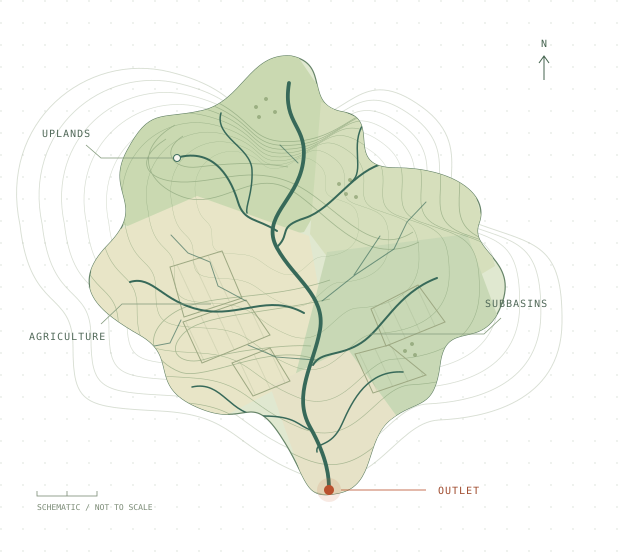

Documented compatibility
The Intel revision 62 build completed the reference simulation. The validation record includes package checks, SHA-256 verification, and SWATrunR integration evidence.
Your SWAT+ revision 62 workflow, together in one place. Prepare inputs, check your model, calibrate, and explore management scenarios in a portable Windows environment.
Windows 10 / 11 · 64-bit · Git LFS required

LESS SETUP. MORE RESEARCH.
Bring the model and its tools into the same environment. The bundle includes portable R and RStudio, a private R library, and familiar stage launchers.
Launchers use the bundled R runtime and private library, and check all seven SWAT package versions before opening a module.
Package, library, and binary manifests record versions, source commits, archives, and checksums.
THE WORKFLOW
Start with a prepared model. Move through verification and calibration, then explore the management questions that matter to your catchment.
Prepare inputs and generate the clean setup used by later modules. The setup stage places one tested Intel revision 62 executable in the generated model folder.
st1_run.batPINNED, TOGETHER
Exact package versions and a bundled Intel executable keep the software environment explicit. Your system's R library stays separate.
0.1.0.9015 ↗
SWATrunRRun model simulations1.1.0.9020 ↗
SWATtunRCalibrate model parameters0.3.15 ↗
SWATdoctRCheck and report model behavior0.1.32 ↗
SWATfarmRExplore farm management4.0.5 ↗
SWATprepRPrepare model inputs1.0.16 ↗
SWATmeasRApply measures & scenarios0.9.4 ↗
START HERE
Use a local Windows 10/11 64-bit drive. Install Git with Git LFS, then run these commands in a Windows command prompt.
View repository:: 1. Enable Git LFS and clone the bundle
git lfs install
git clone https://github.com/MR-Eini/SWATplus62-Portable-Workflow.git
cd SWATplus62-Portable-Workflow
:: 2. Check the bundled environment
verify_bundle.bat
:: 3. After verification succeeds, open Setup
st1_run.batGit LFS downloads the actual executables and DLLs. A source ZIP may leave pointer files. Keep the internal folder names unchanged.
RESEARCH WITH CONTEXT
The repository documents compatibility testing of the bundled executable, packages, and workflow against a supplied reference setup.
Read the validation recordThe Intel revision 62 build completed the reference simulation. The validation record includes package checks, SHA-256 verification, and SWATrunR integration evidence.
Successful execution establishes software compatibility. Calibration quality, validation thresholds, parameter transferability, and input suitability need evaluation for each catchment.
PRACTICAL DETAILS
Answers grounded in the repository documentation.
The bundle includes portable R 4.5.1, RStudio, and a private preinstalled library. Workflow launchers use this environment and reject mismatched SWAT package versions.
Run install_or_repair_packages.bat. It reinstalls the exact SWAT package archives in packages/ without updating dependencies or using your user library. Then run verify_bundle.bat again.
SWATdoctR 0.1.32 includes read_swat_verification() to read retained outputs without executing SWAT+ again. Use the generic recover_saved_run.R template in Step 2 when a completed run was retained. Reading a complete output table still requires enough RAM for that table.
Atmospheric deposition defaults to online EMEP mode. To disable deposition, set SWAT_ATMO_DEP_MODE=none. To supply your own CSV, set SWAT_ATMO_DEP_MODE=file and SWAT_ATMO_DEP_FILE. Review the setup documentation for the requirements of your chosen data sources.
The Intel build completed the supplied model. A separate GNU revision 62 build stopped during weather initialization for that model with a floating-point exception. The bundle pins the Intel build used in its compatibility tests.
The repository documents the additional lignin fields required in plants.plt, the crop-name issue, and the checks that prevent unresolved plant diagnostics from producing misleading reports.
R, RStudio, SWAT+, WhiteboxTools, the R packages, workflow data, and referenced datasets retain their respective licenses and terms. Check the relevant component and data-source terms before reuse or redistribution.
KEEP EXPLORING